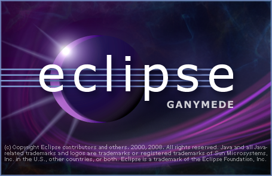

Eclipse 3.4/Ganymede 발표

2008년 6월 25일로 eclipse 3.4 버젼인 Ganymede 가 발표되었다. eclipse 는 정말 다양한 곳에서 쓰이고 있는데 생각보다 3.4 의 발표에 대한 관심이 적은 듯 하다. 아마 지금도 충분히 만족하면서 써서 그런듯 하다(?)
정말 광범위하게 쓰이기는 하지만 아직 eclipse 는 Java 의 개발툴이라는 인식이 강한데 사실 CDT 플러그인의 덕택으로 C/C++ 에 대한 지원도 상당히 잘되는 편이다. Java 로 만들어져서 꽤 느린감도 있지만 이제 꽤 쓸만한 수준이다.
다음 2개의 링크에서 eclipse 3.4/Ganymede 의 새로운 기능 중 쓸만한 것들을 뽑아서 번역해보았다.
* [Eng] eclipse 3.4 의 새로운 기능
* [Eng] CDT 5.0 의 새로운 기능
전체
- Editor 탭을 마우스 가운데 버튼 클릭으로 현재 문서를 닫을 수 있음
- 찾기/바꾸기에서 정규식을 쉽게 쓸 수 있게 되었음
- debugging 시에 변수를 watch 창으로 Drag & Drop 가능
CDT 5.0
- file template 기능을 통해 New Class 를 했을 때 기본 코드를 지정할 수 있음
- include 를 할 때 Ctrl+Space(Content Assist) 를 하면 쉽게 include 파일명을 넣을 수 있음
- for, while, if 문등의 block 도 folding 할 수 있음
- 단축키 설정에서 Scheme 에 "Microsoft Visual Studio" 가 추가되어 쉽게 단축키 설정을 할 수 있음
- Rename 밖에 없던 C++ Refactoring 기능에 다음과 같은 기능들이 추가되었다.
- Getter/Setter 생성
- 함수 숨기기(private 로 이동)
- Implement Method(함수 선언부에서 선택시 함수 구현부 생성)
- Extract Constant
- Extract Function
- Indexer 향상(여러 상황 지원, 속도 향상)
- Ensure newline at end of file 옵션이 기본적으로 켜져 있어서, 파일의 마지막 줄에 빈 줄을 넣지 않아서 warning 이 뜨는 현상을 위해 옵션을 고치지 않아도 된다.
자바
- 숫자를 따로 하이라이트해준다.
- 변수를 읽기/쓰기 하는 부분을 따로 표시할 수 있게 해준다(디버깅할 때 편할듯)
- 멀티CPU 를 통해 30% 까지 속도 향상이 있다.
- Java String 을 StringBuffer 로 컨버트
SWT
- 3개의 상태를 가지는 체크 버튼(on/off 외에 중간 상태가 추가)
- 윈도우 비스타에서의 native progress bar 지원
- 이미지와 url 에 대한 Drag & drop 지원
- 전체 화면 지원
- 투명도(Alpha, Transparent) 지원
기타
- (Beta인 셈이지만)Subversion 을 위한 Provider 제공(Help -> Software Updates -> Available Software 에서 Ganymede Update Sites -> Collaboration Tools -> SVN Team Provider 에서 설치)